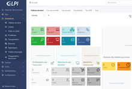

| Notions | Définitions | Images |
| GLPI | GLPI (sigle de Gestionnaire Libre de Parc Informatique)2 est un logiciel libre de gestion des services informatiques (ITSM) et de gestion des services d'assistance (issue tracking system et ServiceDesk). Cette solution libre est éditée en PHP et distribuée sous licence GPL.
En tant que technologie libre, toute personne peut exécuter, modifier ou développer le code qui est libre. De ce fait, les contributeurs peuvent participer à l’évolution du logiciel en soumettant des modules supplémentaires libre et open source, sur github |  |
| Serveur | Un serveur est un programme informatique ou un périphérique qui fournit un service à un autre programme informatique et à son utilisateur, également appelé client . Dans un centre de données, l'ordinateur physique sur lequel s'exécute un programme serveur est également souvent appelé serveur. |  |
| Proxy | Un proxy (litt. « mandataire ») est un composant logiciel informatique qui joue le rôle d'intermédiaire en se plaçant entre deux hôtes pour faciliter ou surveiller leurs échanges.
Dans le cadre plus précis des réseaux informatiques, un proxy est alors un programme servant d'intermédiaire pour accéder à un autre réseau, généralement Internet. Par extension, on appelle aussi « proxy » un matériel comme un serveur mis en place pour assurer le fonctionnement de tels services. | |